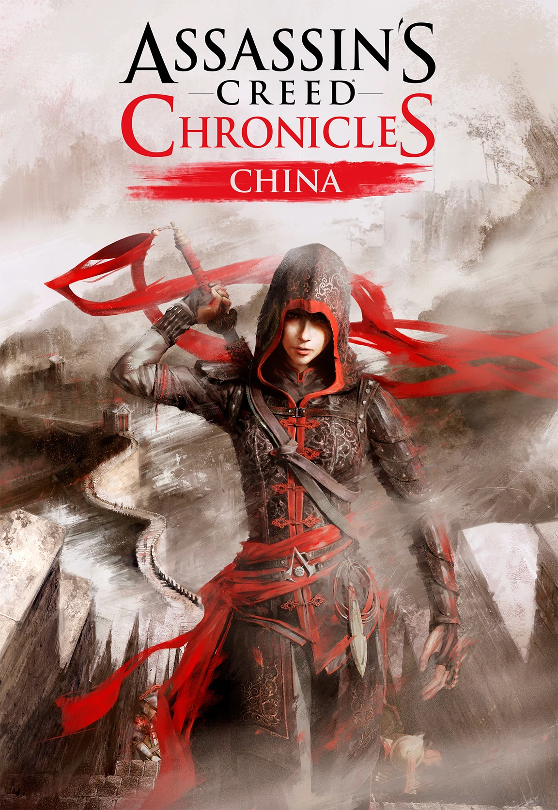

A Dinastia
Através da plataforma Helix da Abstergo, um Iniciado acessa arquivos recuperados de uma das
linhagens mais isoladas da Irmandade. Na simulação, assumimos o controle de Shao Jun na China de
1526, durante a Dinastia Ming, logo após um massacre político que praticamente extinguiu os
Assassinos na região.
Após retornar de seu exílio na Europa, onde foi treinada pelo lendário Ezio Auditore, Shao Jun é
a última sobrevivente de sua Ordem na pátria. Movida pelo desejo de justiça e dever, ela inicia
uma caçada implacável contra os Oito Tigres, uma facção de Templários altamente infiltrados que
manipula o Imperador e controla o governo chinês. Munida de sua agilidade, de uma lâmina oculta
no sapato e de uma misteriosa Caixa de Precursores, ela enfrentará um império nas sombras para
vingar seus aliados e reacender o Credo no Oriente.